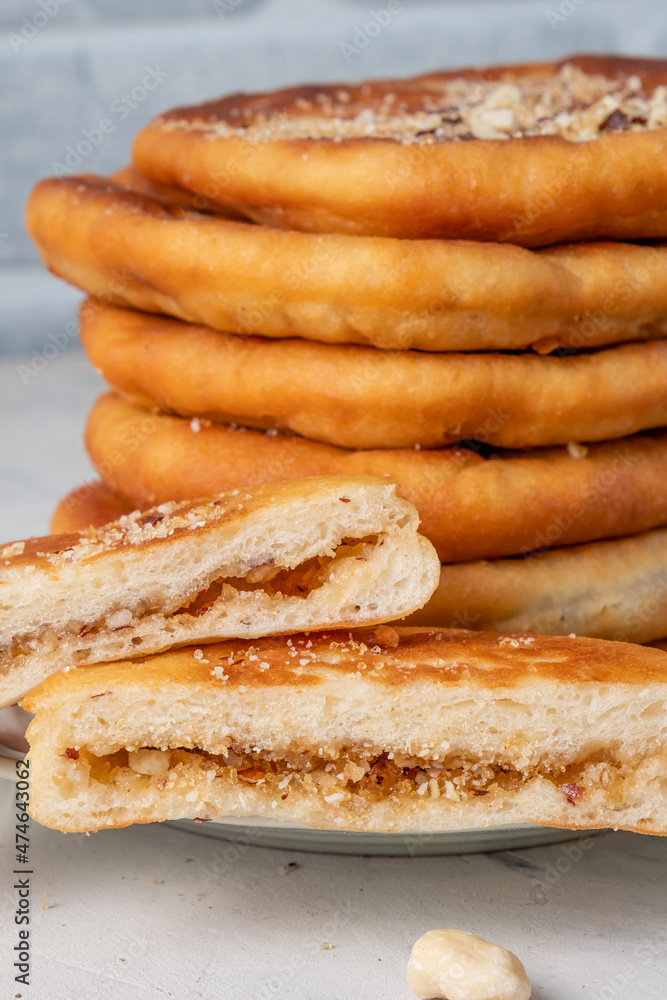
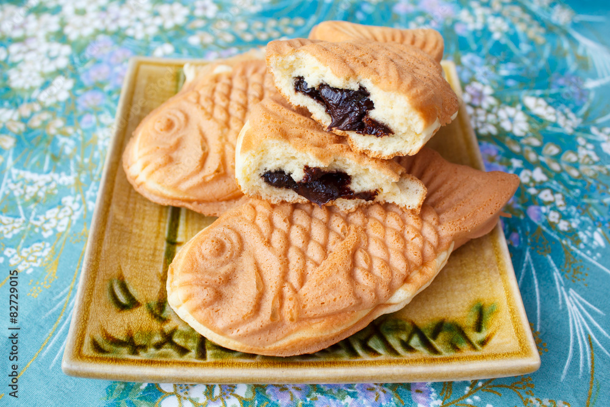

You may be asking yourself, "What is a Korean Lunchbox Cake?" It's almost exactly what it sounds like! These cute petite-sized desserts are packaged in takeout boxes. Korean cafes and bakeries first popularized them. They are known for their minimalist aesthetic desserts. Personally, my favortie Korean treat is called "Yakgwa". It's a delicious honey pastry. Imagine eating dried doughy treat that tasted slightly like a glazed donut! Amazing right?? Here are two Korean deserts I recomend trying!
-
A Hotteok (Sweet Pancake) is a pancake with a surprise in the middle. Bite into it to find a savory warm brown sugar flavored syrup along with the crispiness of the pancake. It's as perfecr as it sounds. You can find these in the frozen isle at H-mart. Add a little butter into a hot pan and add your Hotteok in! You can thank me later.
 -
Bungeoppang (Fish-shaped bread with Sweet Red Bean paste) This sweet desert is my sister's favortie! Similar to the Hotteok, you can bite into this warm pastry to find a delicous red bean paste. Want to get a glimpse of this desert? See if you have a "SomiSomi" in your area. They serve something called a "Ah-Boong" which is almost the same as a Bungeoppang except in the middle you can find ICECREAM. That's right I said ICECREAM.
